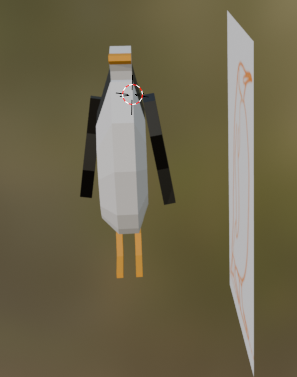

Low-poly penguin model
During the Computer Graphics course one of our tasks was to create a low polygon model of an animal of our choice. While the innitial animal was different in the end I chose to create a model of a penguin. While being far from perfect the model can be recognized as a penguin and therefore can be used as a model in a game or similar media.

Most of the model was created using the extrude option, as well as different modifiers most notable being the mirror modifier, which allowed for easy copying of one side to the other. The reference picture shows the penguin in movement but I decided it would be easier to make the model static as it allowed the legs to be created via the mirror modifier.
